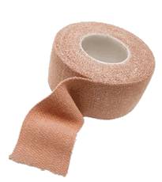

HomeHero At Hand for Peace of Mind™
Home Safety Tips
College Students
Responsibility for Safety
College Students
Fire related emergencies have become a growing threat on college campuses. The U.S. Fire Administration (USFA) believes the major cause of this is a general lack of knowledge about fire safety awareness and prevention.
Whether you are attending a college campus as a new student or a returning student, becoming more educated about your fire safety and prevention is a subject you should discuss with your roommates and classmates as a normal part of your higher education.
As college students, we are sometimes away from home for our first time. General knowledge and practice of a fire emergency is even greater now that you no longer live in an environment you are familiar with and under the guidance and supervision of family.
However, college students are often unaware of to the dangers that can commonly surround them. Whether you live on, or off-campus, knowing how to recognize potential fire hazards, how to reduce the risk of a fire, and what to do in case of a fire emergency is an important part of everyone's education.
Fact: In more than 50% of adult fire fatalities, victims were under the influence of alcohol at the time of the fire. >>
Cooking is the leading cause of fire injuries on college campuses. >>
College students are more vulnerable to certain hazardous conditions that can be prevented. Cooking hazards can be reduced and when you are prepared, you can take the appropriate action that might prevent an emergency from happening.
HomeHero™ has identified some authoritative sites offering fire safety suggestions appropriate for college age young adults. Consider these safety suggestions next time you're cooking:
- Consider staying in the cooking area and being alert while cooking.
- Towels, food packaging and potholders can burn, so make a point to keep these and other flammable items away from the stove top and oven.
- For students in dormitories that provide small cooking areas in their rooms, learn from the experts how to put out a small pan fire or other common cooking fires.
- Consider keeping a fire extinguisher close by where you're cooking and having everyone learn how and when to use it.
Be Prepared
Here are some additional important steps safety experts suggest you can take to make life at college safer.
Consider developing a fire checklist with your roommates that stimulates awareness, consideration and fire prevention as a regular part of your daily campus living. Consider checking your living quarters for smoke and carbon monoxide detectors.
Dormitories are required to have state regulated fire systems and security in campus facilities. But that could sometimes that could create a false sense of security. Even with rigorous fire drill programs, you should have properly functioning smoke and carbon monoxide alarms in your sleeping quarters. Also know where the next closest ones are located. It doesn't hurt to have them on your checklist to make sure they are functioning properly and maintained.
You may also consider purchasing a UL registered fire extinguisher for your dorm room or campus apartment. Check with your dormitory managers to insure you can have this type of fire equipment stored in your rooms before purchasing. Knowing how to use a fire extinguisher properly is an important part of usage.
Have an Escape Plan
Having an escape plan may be a normal function of the dormitory or campus housing fire drill procedures, but it's always good to remind everyone of what exits are closest to their sleeping quarters and review the fire safety escape map commonly posted in hallways and public areas.
Here are some additional important steps fire safety experts suggest you can take to make life at college safer.
Make an Escape Plan with your roommates and others. Find at least two ways out of your room to safety and practice getting out.
Learn the Stop, Drop and Roll technique in case your clothes catch fire and know the right ways to deal with smoke if you encounter it.
Time is critical in fire emergencies - Fire safety experts remind us not to ignore fire alarms. Do not wait to see fire or smoke; and do not worry about grabbing your belongings. Don't take time to use the phone before leaving. Instead, find a phone outside.
If you live off campus, consider installing smoke and carbon monoxide alarms outside and inside your room, and throughout the house or apartment where needed.
Try to visit two or three of these sites with your roommates or classmates together and visit them as often as needed. Consider creating some fun activities that you can share together while learning important information about your fire safety awareness and protection.
- Read what the experts have to say about about campus fire safety
- Learn more about the key college fire safety issues
- Knowing the facts about extension cords could save your life
- A guide to when and how to use a fire extinguisher for small fires
- If you live in a multistory building here is some valuable information
First Aid Kit

Learn from fire safety experts how you and your family can reduce the risks of a fire in your home. 